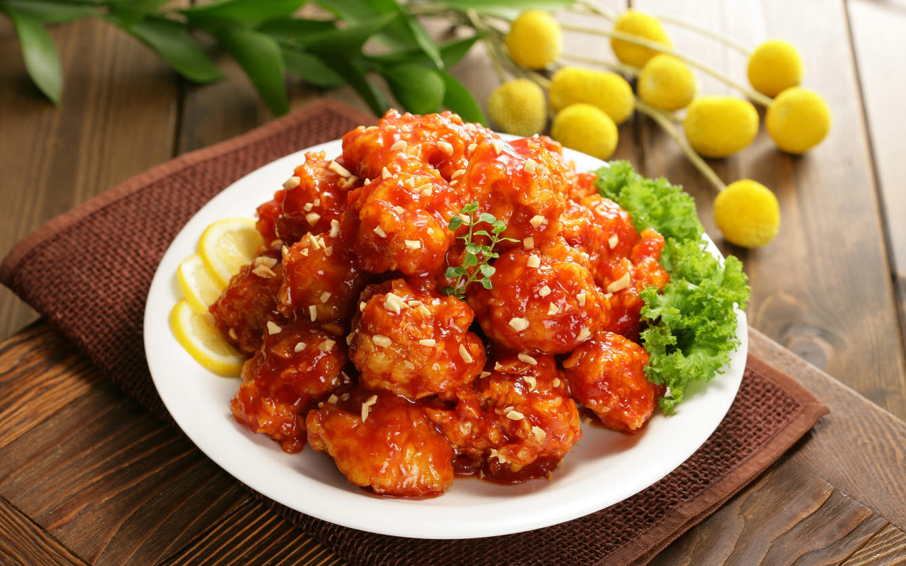

Top 5 Korean Food
TOP5 - Yangnyeom Tongdak - Seasoned Fried Chicken – 양념통닭
O Yangnyeom Tongdak, podemos dizer que é um frango frito ao molho ardido com ketchup. Na coreia, os preços das carnes suínas e bovinas sao muito caras, fazendo com que as pessoas tenha mas acessibilidade para as carnes de aves.
TOP4 - Japchae - Stir Fried Noodles – 잡채

O Japchae, podemos dizer que é o macarrão típica coreana, esse macarrão(que se chama Dangmyon - 당면 -) é feita de pó greengram ou batata ou batata doce, e tem base de molho Soyu com vários legumes e carnes.
TOP3 - Bulgogi - Marinated Beef BBQ – 불고기

O Bulgogui, é feita de carne bovina, marinada pelo molho soyu e alguns legumes . E depois frita com cogumelos para ter melhor sabor.
TOP2 - Bibimbap - Mixed Rice – 비빔밥

O bibimbap, é simplesmente arroz misturada com todos legumes e sobras em casa. Mas o mais tradicional acompanha cenoura,pepino,cogumelos shitakes,alface crespa,carne bovina moída e com molho de pasta pimenta vermelha(gothujam - 고추장 - podemos encontrar em supermercados coreanos ou japones)
TOP1 - Kimchi - Fermented Cabbage – 김치

O Kimchi !!! Quem vê pela primeira vez tem muita dificuldade pra comer, pois ela é bem ardida e tem um cheiro bem forte pois é fermentada. Mas um coreano nunca satisfeito sem um bom kimchi na mesa.